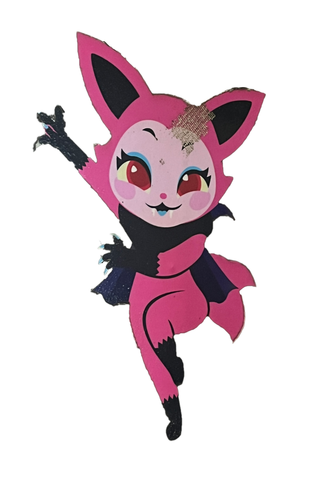
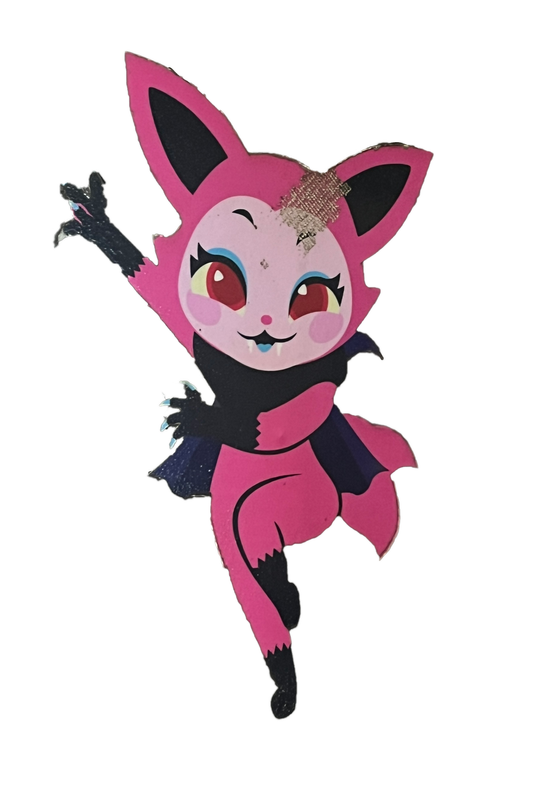
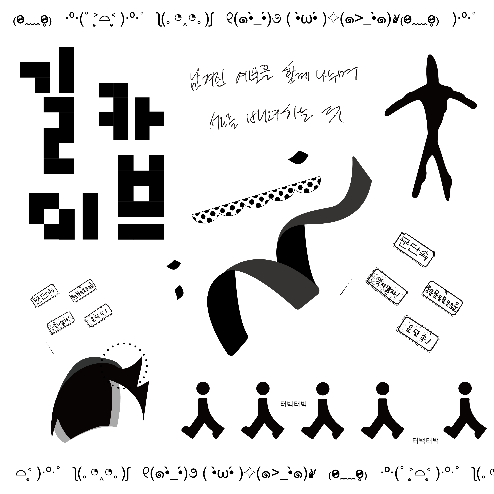
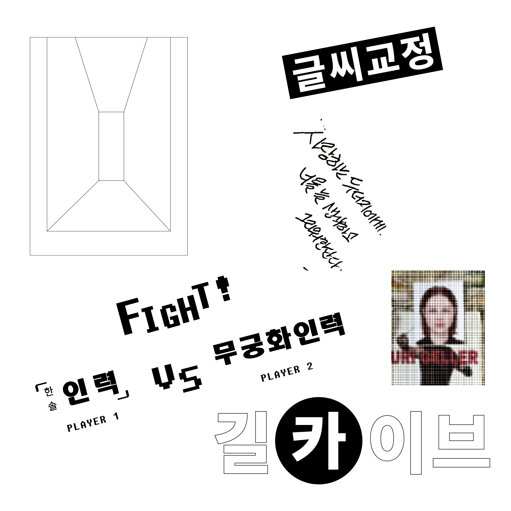
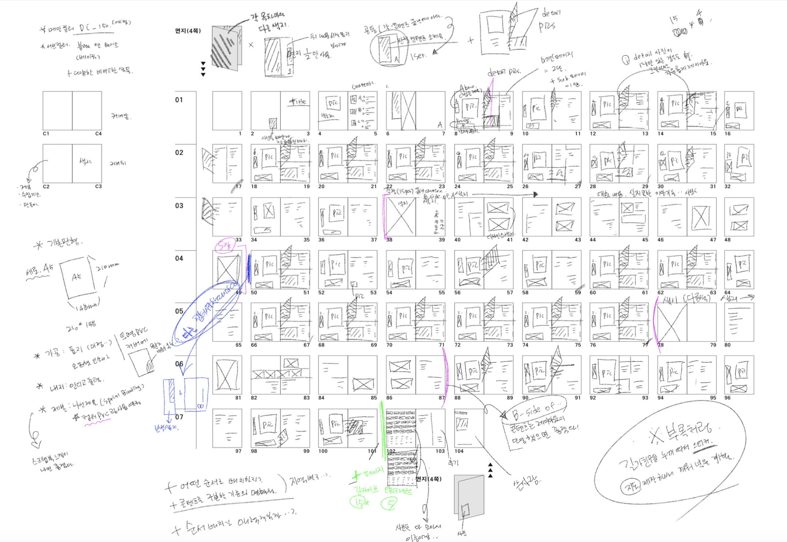
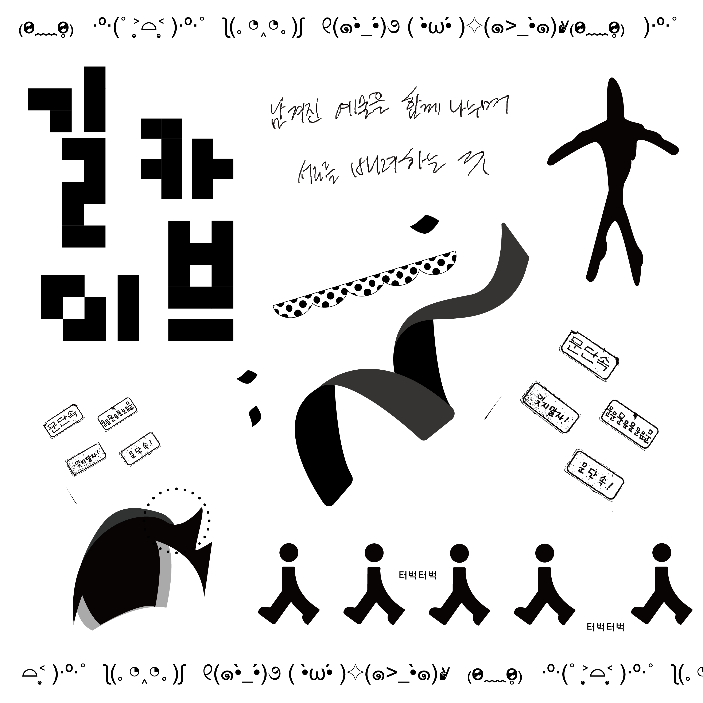
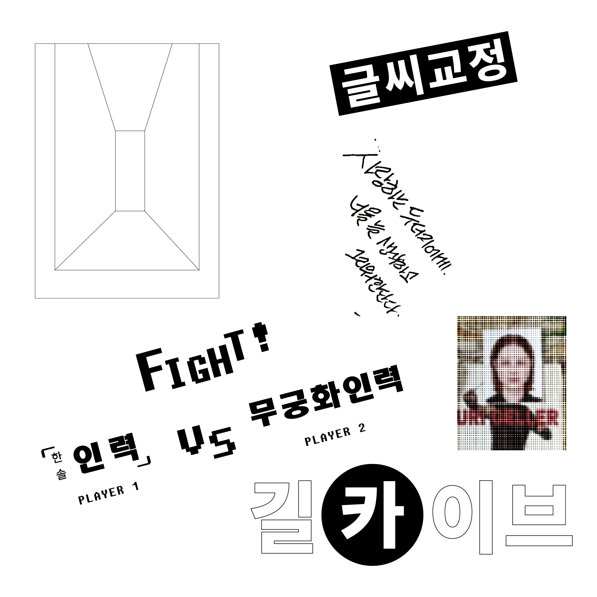
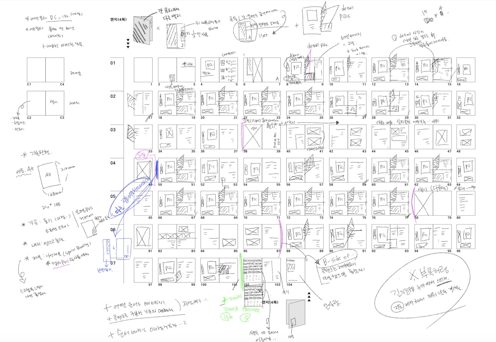

2024
[아카이브! 길카이브! 아카이브!]]
226p, spiral binding
148 * 210
page layout sketch
a physical book photo
my graphics..(ˆ. ̫ . ⸝⸝⸝ˆ) ໒꒱
아카이브! 길카이브! 아카이브!는
길에서의 나의 시선은 어느 지점에서 머무르고 있었으
왜 발걸음을 멈추게 했는지에 대한 이유를 분석해 보고
사사로운 디자인 사념의 흐름을 적어 내려본 수집의 결과물입니다.
가끔 이걸 왜 찍었지? 싶은 길가의 사진들은 친구들과 함께 걷다가도
나만 멈춰서 카메라를 들게 하고 한 번 더 둘러보게 하는
내 시선을 사로잡은 것들이리라 하는 생각이 들었고 이를 수집하고자 시작한 프로젝트입니다.
 

길가에 있는 유쾌한 친구들에게서 재미있는 지점은 살짝 가져와
저의 디자인적 고민으로 만들고자 했습니다.

 




